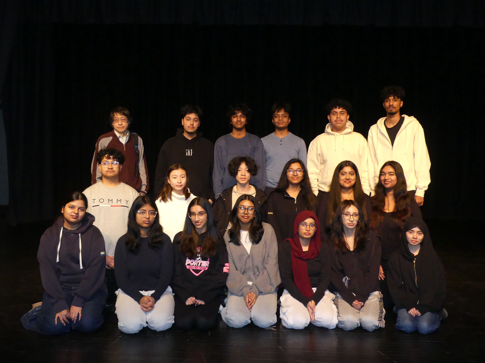

JIHAN AHMED
← BACK TO HOME
Visual Archive
ROLL:01 — J.AHMED
FR: 001
ROLL:01 — J.AHMED
FR: 002
ROLL:01 — J.AHMED
FR: 003
ROLL:01 — J.AHMED
FR: 004

ROLL:01 — J.AHMED
FR: 005
ROLL:01 — J.AHMED
FR: 006